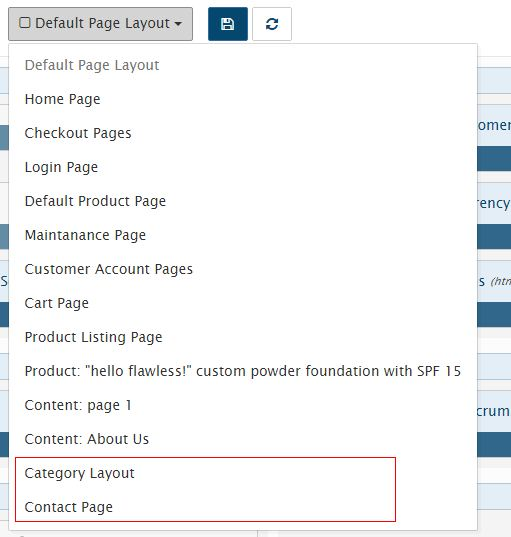

Cấu hình theme¶
File cấu hình của theme cho phép bạn thiết lập tùy biến về giao diện hiển thị ở các trang, cũng như khai báo các files assets (.js, .css) cần thiết sử dụng trong các pages. Ngoài ra bạn có thể tùy chỉnh thêm layout hiển thị riêng cho các page cụ thể và điều chỉnh vị trí của các blocks.
Bạn sửa file này tại storefront/view/<theme>/config/theme.xml
<?xml version="1.0" encoding="UTF-8"?>
<theme>
<assets>
<file type="css"><![CDATA[https://fonts.googleapis.com/css?family=Lato:400,700,300]]></file>
<file type="css"><![CDATA[/theme_asset/css/bootstrap.min.css]]></file>
<file type="css"><![CDATA[/theme_asset/css/pe-icon-7-stroke.css]]></file><!-- icon-7-stroke -->
<!-- global styles -->
<file type="js" bottom="1"><![CDATA[/mytheme/themes/js/jquery.scrolltotop.js]]></file>
<file type="js" bottom="1"><![CDATA[/javascript/bootstrap.min.js]]></file>
<file type="js" bottom="1"><![CDATA[/theme_asset/js/wow.min.js]]></file>
<file type="js" bottom="1"><![CDATA[/theme_asset/js/jquery.meanmenu.js]]></file>
<file type="js" bottom="1"><![CDATA[/theme_asset/js/owl.carousel.min.js]]></file>
<file type="js" bottom="1"><![CDATA[/theme_asset/js/jquery.countdown.min.js]]></file>
<!-- fancybox js
============================================ -->
<file type="js" bottom="1"><![CDATA[/theme_asset/js/fancybox/jquery.fancybox.pack.js]]></file>
<!-- main JS
============================================ -->
<file type="js" bottom="1"><![CDATA[/theme_asset/js/main.js]]></file>
<file type="js" bottom="1"><![CDATA[/javascript/respond.min.js]]></file>
<file type="js" bottom="1"><![CDATA[/javascript/jquery.validate.js]]></file>
<file type="js" bottom="1"><![CDATA[/javascript/jquery.carouFredSel-6.1.0-packed.js]]></file>
<file type="js" bottom="1"><![CDATA[/javascript/jquery.mousewheel.min.js]]></file>
<file type="js" bottom="1"><![CDATA[/javascript/jquery.touchSwipe.min.js]]></file>
<file type="js" bottom="1"><![CDATA[/javascript/jquery.ba-throttle-debounce.min.js]]></file>
<file type="js" bottom="1"><![CDATA[/javascript/jquery.onebyone.min.js]]></file>
<file type="js" bottom="1"><![CDATA[/javascript/custom.js]]></file>
<!-- library -->
<file type="lib"><![CDATA[sliders/bxslider]]></file>
</assets>
<assets page="index/home">
</assets>
<assets page="product/product">
<!-- <file type="js" bottom="1"><![CDATA[/javascript/easyzoom.js]]></file> -->
<file type="css" bottom="0"><![CDATA[/theme_asset/custom-slider/css/nivo-slider.css]]></file>
<file type="css" bottom="0"><![CDATA[/theme_asset/custom-slider/css/preview.css]]></file>
<!-- Nivo slider js
============================================ -->
<file type="js" bottom="1"><![CDATA[/theme_asset/custom-slider/js/jquery.nivo.slider.js]]></file>
<file type="js" bottom="1"><![CDATA[/theme_asset/custom-slider/home.js]]></file>
<file type="css" bottom="1"><![CDATA[/stylesheet/flexslider.css]]></file>
<file type="js" bottom="1"><![CDATA[/javascript/jquery.flexslider.js]]></file>
</assets>
<assets page="about_us">
<!-- <file type="css" ><![CDATA[]]></file> --><!-- page="index/home" -->
<!-- <file type="js" bottom="1"><![CDATA[]]></file> --><!-- `buttom` attribute only for js file -->
</assets>
<templates>
<!-- custom templates page -->
</templates>
<!-- layout -->
<layout>
<!-- custom layouts -->
</layout>
<!-- blocks -->
<blocks>
<!-- custom blocks -->
</blocks>
</theme>
Assets¶
Khai báo chèn các files .js và .css sử dụng trong theme của bạn vào đây trong cặp thẻ <assets.
<assets>
<file type="css"><![CDATA[https://fonts.googleapis.com/css?family=Lato:400,700,300]]></file>
<file type="css"><![CDATA[/theme_asset/css/animate.css]]></file>
<file type="js" bottom="1"><![CDATA[/javascript/bootstrap.min.js]]></file>
</assets>
thuộc tính type chỉ định kiểu file, vd type="css" dành cho file .css, nếu file bạn muốn load ở cuối trang thì thêm bottom="1" vào thẻ <file giống như trên không thì mặc định chúng hiển thị ở trong thẻ <head.
Để cho đơn giản và dễ quản lý tôi đưa toàn bộ các files assets của theme vào một thư mục theme_asset nằm tại storefront/view/<theme_name>/. Lưu ý: đường dẫn được bắt đầu trong thư mục theme.
Các files css và js hệ thống bạn không được xóa đặc biệt là *.js chúng sử lý hành động của vinacart. vd: /javascript, /stylesheet
Bên cạnh đó chúng ta có thể chèn URL ngoài như thư viện jquery,...google font.
Đường dẫn (Path)
Các files chứa trong theme thì được bắt đầu trong thư mục storefront/view/<theme_name>/ và URL bắt đầu bằng dấu / giống như sau:
<file type="css"><![CDATA[/theme_asset/style.css]]></file>
Những files hệ thống thì cũng giống như vậy nhưng ở tại thư mục theme hệ thống mặc định.
Load assset ở page chỉ định
Đôi khi bạn chỉ muốn load các file .css, js ở các page nào đó để tránh load nhiều files không cần thiết với mục đích tăng tốc độ hiển thị website. Chẳng hạn thư viện phóng ảnh chỉ dùng trong trang sản phẩm chi tiết, để thực hiện bạn khai báo thêm thẻ <assets như sau.
<assets page="product/product">
<file type="css" bottom="0"><![CDATA[/theme_asset/custom-slider/css/nivo-slider.css]]></file>
<file type="css" bottom="0"><![CDATA[/theme_asset/custom-slider/css/preview.css]]></file>
<!-- Nivo slider js
============================================ -->
<file type="js" bottom="1"><![CDATA[/theme_asset/custom-slider/js/jquery.nivo.slider.js]]></file>
<file type="js" bottom="1"><![CDATA[/theme_asset/custom-slider/home.js]]></file>
</assets>
Thuộc tính page chứa thông tin địa chỉ page (địa chỉ controller). Ví dụ: storefront/controller/blocks/banner_block.php thì địa chỉ page sẽ là blocks/banner_block . Địa chỉ là tham số rt khi bạn view site, có thể tìm thấy bằng cách view 1 trang sản phẩm.

Chú ý: Mặc định site không bật chế độ SEO Url, để bạn thuận tiện cho việc debug.
Bạn có thể khai báo nhiều thẻ assets nếu muốn, các thẻ không có thuộc tính page sẽ load ở mọi trang.
Bạn cũng có thể chỉ định page bằng tên địa chỉ seo url (alias). VD: Ta có trang about: http://your-domain/about_us
<assets page="about_us">
<file type="css" ><![CDATA[/theme_asset/css/file1.css]]></file> --><!-- page="index/home" -->
<file type="js" bottom="1"><![CDATA[/theme_asset/js/file1.js]]></file> --><!-- `buttom` attribute only for js file -->
</assets>
Templates¶
Mặc định mọi trang sẽ gọi vào common/page.tpl như vậy bạn sẽ viết template chung cho toàn bộ pages vào file này, tuy nhiên nếu bạn muốn linh hoạt hơn bằng cách viết template cho các page khác nhau vào các file khác nhau, chúng ta sẽ khai báo thêm templates vào thẻ <templates.
<templates>
<!-- alway use short path -->
<page context="index/home" template="common/page-home.tpl"></page>
<!-- <page context="index/maintenance" template="common/page-maintenance.tpl"></page> -->
<page context="content/contact" template="common/page-contact.tpl"></page>
<page context="content/content" args="content_id=1" template="common/page-aboutus.tpl"></page>
<page context="product/product" template="common/page-product.tpl"></page>
<page context="product/category" template="common/page-category.tpl"></page>
<page context="product/manufacturer" template="common/page-category.tpl"></page>
<page context="product/search" template="common/page-category.tpl"></page>
<page context="product/special" template="common/page-category.tpl"></page>
</templates>
Mỗi page có template riêng biệt được khai báo vào thẻ <page, địa chỉ page bởi thuộc tính context và địa chỉ .tpl xuất phát trong thư mục template của theme, khai báo vào thuộc tính template.
Lọc page bởi tham số
Bạn cũng có thể sử dụng nhiều templates cho 1 trang, bằng cách lọc tham số URL. Ở ví dụ trên, page content/content sẽ hiển thị nội dung trang có id=1, khai báo tham số content_id vào thuộc tính args.
<page context="content/content" args="content_id=1" template="common/page-aboutus.tpl"></page>
Nếu nhiều hơn một tham số, các tham số cách nhau bởi dấu & vd: arg1=value1&arg2=value2
Viết thêm mỗi template mới, bạn cần khai báo vào <custom_templates.
<custom_templates>
<tpl><![CDATA[common/page-home.tpl]]></tpl>
<tpl><![CDATA[common/page-contact.tpl]]></tpl>
<tpl><![CDATA[common/page-product.tpl]]></tpl>
<tpl><![CDATA[common/page-category.tpl]]></tpl>
...
</custom_templates>
Layout¶
Vinacart có một số templates layout mặc định sau:
- Default Page Layout
- Home Page
- Checkout Pages
- Login Page
- Default Product Page
- Maintenance Page
- Customer Account Pages
- Cart Page
- Product Listing Page.
Ngoài ra, vinacart cho phép bạn thêm layout cho nội dung category, product bạn muốn tùy chỉnh layout. Tuy nhiên việc tùy biến mọi layout sẽ không được phép trong giao diện admin.
Ví dụ trang liên hệ bạn muốn chèn thêm block bản đồ sẽ không được, bạn không thể thao tác trong admin và cần khai báo thêm layout cho page bạn muốn thay đổi dữ liệu (blocks). Viết vào file cấu hình theme (theme.xml) nội dung sau:
<layout>
<page name="Category Layout" context="product/category" param="all_categories" value="1" default="1">
<apply context="product/manufacturer" />
</page>
<page name="Contact Page" context="content/contact" param="contact_page" value="1" default="1">
</page>
</layout>
Tham số:
name- Tên hiển thị layout.context- địa chỉ page.param- tên tùy ý không dấu cách và không được trùng với các layout khác.
Các tham số khác để mặc định.
Nếu bạn muốn áp dụng một layout cho các page khác, khai báo thẻ con <apply giống như trên.
Blocks¶
Có 2 loại block:
- parent block: gồm
header,header_bottom,column_left,column_right,content_top,content_bottom - child block: là các blocks con chứa trong parent block. vd: latest, bestsellers, account,..
Vinacart quy định các child blocks giới hạn hiển thị trong parent blocks. VD, block bestsellers mặc định chỉ hiển thị ở column_left, column_right, content_bottom.
Tuy nhiên bạn có thể mở rộng hiển thị các blocks ở vị trí parent blocks khác để thuận lợi trong việc phát triển theme. Để làm điều này bạn khai báo vào thẻ <blocks. Xem ví dụ dưới đây:
<blocks>
<block>
<!-- example of overriding block -->
<block_txt_id><![CDATA[bestsellers]]></block_txt_id>
<controller>blocks/bestseller</controller>
<templates>
<__AUTO_INCREASE__>
<parent_block_txt_id><![CDATA[footer_top]]></parent_block_txt_id>
<template><![CDATA[blocks/bestseller.tpl]]></template>
</__AUTO_INCREASE__>
<__AUTO_INCREASE__>
<parent_block_txt_id><![CDATA[header_bottom]]></parent_block_txt_id>
<template><![CDATA[blocks/bestseller_home.tpl]]></template>
</__AUTO_INCREASE__>
<__AUTO_INCREASE__>
<parent_block_txt_id><![CDATA[column_left]]></parent_block_txt_id>
<template><![CDATA[blocks/bestseller.tpl]]></template>
</__AUTO_INCREASE__>
<__AUTO_INCREASE__>
<parent_block_txt_id><![CDATA[content_bottom]]></parent_block_txt_id>
<template><![CDATA[blocks/bestseller_home.tpl]]></template>
</__AUTO_INCREASE__>
<__AUTO_INCREASE__>
<parent_block_txt_id><![CDATA[column_right]]></parent_block_txt_id>
<template><![CDATA[blocks/bestseller.tpl]]></template>
</__AUTO_INCREASE__>
</templates>
<custom_templates>
<__AUTO_INCREASE__>
<parent_block_txt_id><![CDATA[footer_top]]></parent_block_txt_id>
<template><![CDATA[blocks/bestseller.tpl]]></template>
<page valueAsAttrs="1" context="content/content" args="content_id=1"></page>
</__AUTO_INCREASE__>
<__AUTO_INCREASE__>
<parent_block_txt_id><![CDATA[header_bottom]]></parent_block_txt_id>
<template><![CDATA[blocks/bestseller_home.tpl]]></template>
</__AUTO_INCREASE__>
</custom_templates>
</block>
</blocks>
Chi tiết:
block_txt_id- txt id của block.controller- controller hiển thị nội dung block.templates- Khai báo parent block và template mặc định của block hiển thị ở vị trí đó, trong mỗi cặp thẻ<__AUTO_INCREASE__.custom_templates- khai báo các template đã thêm ngoài template mặc định của block vào đây.
Để block này có hiệu lực, bạn sẽ nạp lại cấu hình bằng cách truy cập Design > My Settings > Install & Configure nhấn vào tab Refresh Extensions và click Refresh Blocks
Ok, quay trở lại trang layout trong admin, chọn layout trong danh sách bạn sẽ thấy bổ xung các layout mới.
Sidebar block¶
Giống hầu hết các cms hiện nay như wordpress, bạn có thể khai báo giao diện sidebar dễ dàng với vinacart. Thiết lập trong file cấu hình (theme.xml)
<block_skins>
<skin name="skin1">
<param name="before_title"><![CDATA[<div class="title %2$s" ><h2>]]></param>
<param name="after_title"><![CDATA[</h2></div>]]></param>
<param name="before_widget"><![CDATA[<div id="%1$s" class="block %2$s" >]]></param>
<param name="after_widget"><![CDATA[</div>]]></param>
</skin>
<skin name="sidebar">
<param name="before_title"><![CDATA[<h3 class="%2$s">]]></param>
<param name="after_title"><![CDATA[</h3>]]></param>
<param name="before_widget"><![CDATA[<div id="%1$s" class="aa-sidebar-widget %2$s">]]></param>
<param name="after_widget"><![CDATA[</div>]]></param>
</skin>
<skin name="footer">
<param name="before_title"><![CDATA[<h3 class="%2$s">]]></param>
<param name="after_title"><![CDATA[</h3>]]></param>
<param name="before_widget"><![CDATA[<div id="%1$s" class="aa-footer-widget %2$s">]]></param>
<param name="after_widget"><![CDATA[</div>]]></param>
</skin>
<skin name="blog_sidebar">
<param name="before_title"><![CDATA[<h3 class="%2$s">]]></param>
<param name="after_title"><![CDATA[</h3>]]></param>
<param name="before_widget"><![CDATA[<div id="%1$s" class="aa-sidebar-widget %2$s">]]></param>
<param name="after_widget"><![CDATA[</div>]]></param>
</skin>
</block_skins>
Áp dụng sidebar vào parent block.
<blocks>
<block>
<block_txt_id><![CDATA[header]]></block_txt_id>
<controller>common/header</controller>
<skin>
<name><![CDATA[skin1]]></name>
<values>
<param name="before_title"><![CDATA[block1]]></param>
<param name="before_widget"><![CDATA[block_1]]></param>
</values>
</skin>
</block>
<block>
<block_txt_id><![CDATA[header_bottom]]></block_txt_id>
<controller>common/header_bottom</controller>
<skin>
<name><![CDATA[skin1]]></name>
<values>
<param name="before_title"><![CDATA[block1]]></param>
<param name="before_widget"><![CDATA[block_1]]></param>
</values>
</skin>
</block>
<block>
<block_txt_id><![CDATA[column_left]]></block_txt_id>
<controller>common/column_left</controller>
<skin>
<name><![CDATA[sidebar]]></name>
<values>
<param name="before_title"><![CDATA[block1]]></param>
<param name="before_widget"><![CDATA[block_1]]></param>
</values>
</skin>
<config>
<param name="config_image_product_width"><![CDATA[100]]></param>
<param name="config_image_product_height"><![CDATA[95]]></param>
</config>
</block>
<block>
<block_txt_id><![CDATA[column_right]]></block_txt_id>
<controller>common/column_right</controller>
<skin>
<name><![CDATA[blog_sidebar]]></name>
<values>
<param name="before_title"><![CDATA[block1]]></param>
<param name="before_widget"><![CDATA[block_1]]></param>
</values>
</skin>
</block>
..
</blocks>
Chú ý: giá trị biến before_title, after_title ở thẻ <param tương ứng với biến %2$s.